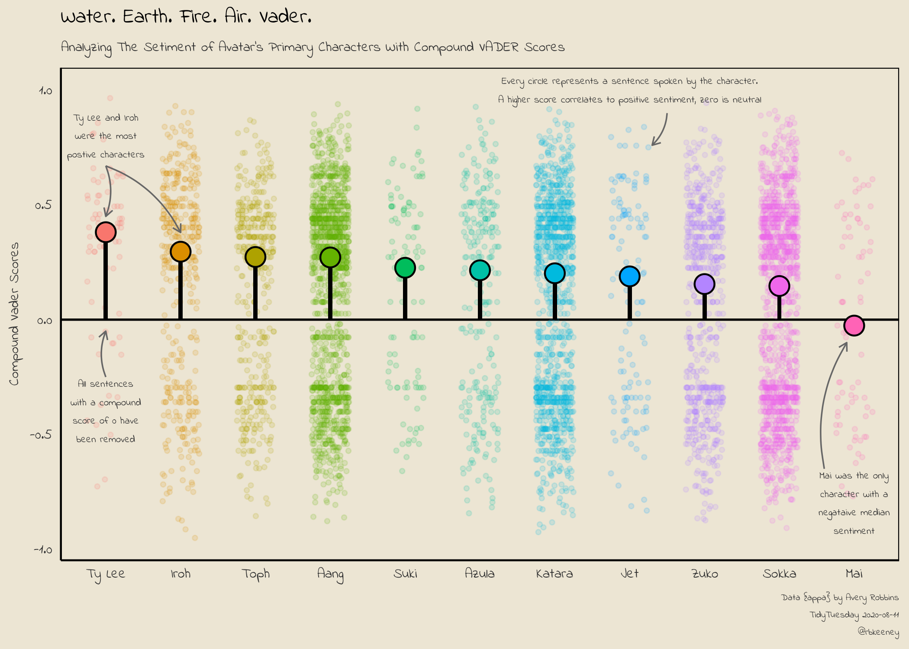
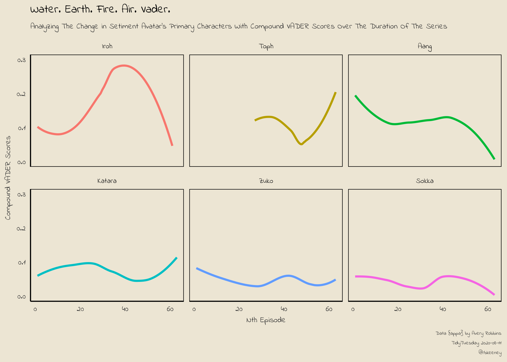

library(tidytuesdayR) # to get data quickly
library(tidyverse) # no matter how dark, there is always hope
library(magrittr) # for some more unique piping options
library(sentimentr) # for getting sentences
library(vader) # for vader sentiment scoresAvatar VADER Sentiment Analysis
TidyTuesday - Avitar and Vader Sentiment Scores
The August 12, 2020 TidyTuesday dataset presents a perfect opportunity to try out the {vader} package which can be used for native language processing.
My goal was to analyze character sentiment by breaking down each character’s lines and running them through vader. Here are a few questions that I hoped to answer along the way:
Who are the most positive characters?
Who are the most negative characters?
Does character sentiment change over the duration of the series?
I also wanted to explore a few new concepts such as the unique piping operators in {magrittr}, {tvthemes}, fonts, customizing themes, and improving my plot annotations. And while I wanted to make a word cloud in the shape of Appa - that’s going to have to wait until next time.
Initial libraries and load data
The first set of libraries to load are as follows. I do load a few font and theme libraries later. But, if you want to use vader this will get you started.
As always, TidyTuesday makes it easy to get the data.
tuesdata <- tidytuesdayR::tt_load('2020-08-11')--- Compiling #TidyTuesday Information for 2020-08-11 ------- There are 2 files available ------ Starting Download ---
Downloading file 1 of 2: `avatar.csv`
Downloading file 2 of 2: `scene_description.csv`--- Download complete ---avatar <- tuesdata$avatarLet’s take a quick look at what is included in this dataset. It’s the script to each episode, including the writer, director, and IMDB episode - however, we’re going to focus on what the characters are speaking.
tibble::tribble(
~variable, ~class, ~description,
"id", "integer", "Unique Row identifier",
"book", "character", "Book name",
"book_num", "integer", "Book number",
"chapter", "character", "Chapter name",
"chapter_num", "integer", "Chapter Name",
"character", "character", "Character speaking",
"full_text", "character", "Full text (scene description, character text)",
"character_words", "character", "Text coming from characters",
"writer", "character", "Writer of book",
"director", "character", "Director of episode",
"imdb_rating", "double", "IMDB rating for episode"
) %>% knitr::kable()| variable | class | description |
|---|---|---|
| id | integer | Unique Row identifier |
| book | character | Book name |
| book_num | integer | Book number |
| chapter | character | Chapter name |
| chapter_num | integer | Chapter Name |
| character | character | Character speaking |
| full_text | character | Full text (scene description, character text) |
| character_words | character | Text coming from characters |
| writer | character | Writer of book |
| director | character | Director of episode |
| imdb_rating | double | IMDB rating for episode |
Who speaks the most often?
First, I ran a quick line of code to see who talked the most often and if I need to clean it up a bit. Looks like I'm going to have to remove the "Scene Description". Additionally, I plan on picking a subset of the characters to plot later and I want to see who speaks enough to be included.
avatar %>% group_by(character) %>% summarize(n=n())%>% arrange(-n) %>% head(20) %>% knitr::kable()| character | n |
|---|---|
| Scene Description | 3393 |
| Aang | 1796 |
| Sokka | 1639 |
| Katara | 1437 |
| Zuko | 776 |
| Toph | 507 |
| Iroh | 337 |
| Azula | 211 |
| Jet | 134 |
| Suki | 114 |
| Zhao | 107 |
| Mai | 82 |
| Hakoda | 77 |
| Roku | 67 |
| Ty Lee | 64 |
| Ozai | 59 |
| Bumi | 55 |
| Yue | 53 |
| Hama | 49 |
| Warden | 49 |
Data Prep
Thanks to Avery Robbins for dataset {appa} there isn't much cleaning do be done, I only removed the "Scene Description". Since I'm also trying to get used to using the magrittr %<>% assignment-piping operator, this was a is was a good opportunity to start.
avatar_clean <- avatar
avatar_clean %<>% filter(character != "Scene Description") %>% select(id:character,character_words)VADER compound scores
Luke, I am your Father. You can read more about it vader here: PDF. While it is designed for social media, it also aligns pretty well with my priors about the characters.
Step 1: Sentences. Yip yip!
I'm going to include my code I used to check my process along the way. Here, I check to make sure get_sentences() is working.
avatar_clean %>% head(5) %>% get_sentences() %>% knitr::kable()| id | book | book_num | chapter | chapter_num | character | character_words | element_id | sentence_id |
|---|---|---|---|---|---|---|---|---|
| 1 | Water | 1 | The Boy in the Iceberg | 1 | Katara | Water. | 1 | 1 |
| 1 | Water | 1 | The Boy in the Iceberg | 1 | Katara | Earth. | 1 | 2 |
| 1 | Water | 1 | The Boy in the Iceberg | 1 | Katara | Fire. | 1 | 3 |
| 1 | Water | 1 | The Boy in the Iceberg | 1 | Katara | Air. | 1 | 4 |
| 1 | Water | 1 | The Boy in the Iceberg | 1 | Katara | My grandmother used to tell me stories about the old days: a time of peace when the Avatar kept balance between the Water Tribes, Earth Kingdom, Fire Nation and Air Nomads. | 1 | 5 |
| 1 | Water | 1 | The Boy in the Iceberg | 1 | Katara | But that all changed when the Fire Nation attacked. | 1 | 6 |
| 1 | Water | 1 | The Boy in the Iceberg | 1 | Katara | Only the Avatar mastered all four elements; only he could stop the ruthless firebenders. | 1 | 7 |
| 1 | Water | 1 | The Boy in the Iceberg | 1 | Katara | But when the world needed him most, he vanished. | 1 | 8 |
| 1 | Water | 1 | The Boy in the Iceberg | 1 | Katara | A hundred years have passed, and the Fire Nation is nearing victory in the war. | 1 | 9 |
| 1 | Water | 1 | The Boy in the Iceberg | 1 | Katara | Two years ago, my father and the men of my tribe journeyed to the Earth Kingdom to help fight against the Fire Nation, leaving me and my brother to look after our tribe. | 1 | 10 |
| 1 | Water | 1 | The Boy in the Iceberg | 1 | Katara | Some people believe that the Avatar was never reborn into the Air Nomads and that the cycle is broken, but I haven’t lost hope. | 1 | 11 |
| 1 | Water | 1 | The Boy in the Iceberg | 1 | Katara | I still believe that, somehow, the Avatar will return to save the world. | 1 | 12 |
| 3 | Water | 1 | The Boy in the Iceberg | 1 | Sokka | It’s not getting away from me this time. | 2 | 1 |
| 3 | Water | 1 | The Boy in the Iceberg | 1 | Sokka | Watch and learn, Katara. | 2 | 2 |
| 3 | Water | 1 | The Boy in the Iceberg | 1 | Sokka | This is how you catch a fish. | 2 | 3 |
| 5 | Water | 1 | The Boy in the Iceberg | 1 | Katara | Sokka, look! | 3 | 1 |
| 6 | Water | 1 | The Boy in the Iceberg | 1 | Sokka | Sshh! | 4 | 1 |
| 6 | Water | 1 | The Boy in the Iceberg | 1 | Sokka | Katara, you’re going to scare it away. | 4 | 2 |
| 6 | Water | 1 | The Boy in the Iceberg | 1 | Sokka | Mmmm … | 4 | 3 |
| 6 | Water | 1 | The Boy in the Iceberg | 1 | Sokka | I can already smell it cookin’. | 4 | 4 |
| 8 | Water | 1 | The Boy in the Iceberg | 1 | Katara | But, Sokka! | 5 | 1 |
| 8 | Water | 1 | The Boy in the Iceberg | 1 | Katara | I caught one! | 5 | 2 |
Okay, it works. Run it.
avatar_sentences <- avatar_clean %>% get_sentences()Step 2: Check structure and test VADER
Check the structure of avatar_sentences to setup VADER properly
glimpse(avatar_sentences)Rows: 18,440
Columns: 9
$ id <dbl> 1, 1, 1, 1, 1, 1, 1, 1, 1, 1, 1, 1, 3, 3, 3, 5, 6, 6, ~
$ book <chr> "Water", "Water", "Water", "Water", "Water", "Water", ~
$ book_num <dbl> 1, 1, 1, 1, 1, 1, 1, 1, 1, 1, 1, 1, 1, 1, 1, 1, 1, 1, ~
$ chapter <chr> "The Boy in the Iceberg", "The Boy in the Iceberg", "T~
$ chapter_num <dbl> 1, 1, 1, 1, 1, 1, 1, 1, 1, 1, 1, 1, 1, 1, 1, 1, 1, 1, ~
$ character <chr> "Katara", "Katara", "Katara", "Katara", "Katara", "Kat~
$ character_words <gt_sntnc> "Water.", "Earth.", "Fire.", "Air.", "My grandmot~
$ element_id <int> 1, 1, 1, 1, 1, 1, 1, 1, 1, 1, 1, 1, 2, 2, 2, 3, 4, 4, ~
$ sentence_id <int> 1, 2, 3, 4, 5, 6, 7, 8, 9, 10, 11, 12, 1, 2, 3, 1, 1, ~Now for a trial run of vader_df()… notice we can pull out the the $compound column, I'll use that when I bind the data back into the avatar_sentences dataset.
avatar_sentences$character_words %>% head(5) %>% vader_df() %>% knitr::kable()| text | word_scores | compound | pos | neu | neg | but_count |
|---|---|---|---|---|---|---|
| Water. | {0} | 0.000 | 0.0 | 1.000 | 0.000 | 0 |
| Earth. | {0} | 0.000 | 0.0 | 1.000 | 0.000 | 0 |
| Fire. | {-1.4} | -0.340 | 0.0 | 0.000 | 1.000 | 0 |
| Air. | {0} | 0.000 | 0.0 | 1.000 | 0.000 | 0 |
| My grandmother used to tell me stories about the old days: a time of peace when the Avatar kept balance between the Water Tribes, Earth Kingdom, Fire Nation and Air Nomads. | {0, 0, 0, 0, 0, 0, 0, 0, 0, 0, 0, 0, 0, 0, 2.5, 0, 0, 0, 0, 0, 0, 0, 0, 0, 0, 0, -1.4, 0, 0, 0, 0} | 0.273 | 0.1 | 0.831 | 0.069 | 0 |
Step 3: Cross fingers, Run Vader, Make Coffee
Running it on all the sentences takes a bit of time. Go make coffee. Check Twitter. Pet the dog.
ptm <- proc.time() # Start the clock!
vader_comp <- avatar_sentences$character_words %>% vader_df() %>% select(compound)Warning in sentiments[i] <- senti_valence(wpe, i, item): number of items to
replace is not a multiple of replacement lengthproc.time() - ptm # Calc time user system elapsed
101.12 28.54 154.94 #note, set "cache=TRUE" and save some time!Inspect the results
# check it visually
vader_comp %>% arrange(-compound) %>% head(5) compound
1 0.965
2 0.944
3 0.939
4 0.931
5 0.927vader_comp %>% arrange(-compound) %>% tail(5) compound
18436 -0.916
18437 -0.926
18438 -0.927
18439 -0.947
18440 -0.951# Any failures?
vader_comp %>% filter(is.na(compound)) # no NAs[1] compound
<0 rows> (or 0-length row.names)vader_comp %>% filter(is.nan(compound)) # no NaNs[1] compound
<0 rows> (or 0-length row.names)# check dims before binding
dim(vader_comp)[1] 18440 1dim(avatar_sentences)[1] 18440 9Step 4: Bind
Time to add the compound vader score back into our dataset and look at the top 10 instances (again). I could have done this code much more condensed; but, I kept it separated so you follow the process.
avatar_sentences %<>% cbind(vader_comp)
avatar_sentences %>% head(5) %>% knitr::kable()| id | book | book_num | chapter | chapter_num | character | character_words | element_id | sentence_id | compound |
|---|---|---|---|---|---|---|---|---|---|
| 1 | Water | 1 | The Boy in the Iceberg | 1 | Katara | Water. | 1 | 1 | 0.000 |
| 1 | Water | 1 | The Boy in the Iceberg | 1 | Katara | Earth. | 1 | 2 | 0.000 |
| 1 | Water | 1 | The Boy in the Iceberg | 1 | Katara | Fire. | 1 | 3 | -0.340 |
| 1 | Water | 1 | The Boy in the Iceberg | 1 | Katara | Air. | 1 | 4 | 0.000 |
| 1 | Water | 1 | The Boy in the Iceberg | 1 | Katara | My grandmother used to tell me stories about the old days: a time of peace when the Avatar kept balance between the Water Tribes, Earth Kingdom, Fire Nation and Air Nomads. | 1 | 5 | 0.273 |
Looks good!
Plot Prep
As I prepare to make some plots there are few things I’d like to have available:
An “episode” number so I can sort and chart books 1-3 because chapter numbers are repeated within each book
Reordered characters - based on their median vader score so that the plots look nice.
# create new sequence number for each chapter, because chapter number is repeated within each book
unique(avatar_sentences$chapter_num) [1] 1 2 3 4 5 6 7 8 9 10 11 12 13 14 15 16 17 18 19 20 21# add episode_num
avatar_sentences %<>%
mutate(episode_num = case_when(
book_num == 1 ~ chapter_num,
book_num == 2 ~ chapter_num + 21,
book_num == 3 ~ chapter_num + 42
))
# add in character vader compound median to sort
avatar_sentences %<>%
group_by(character) %>%
mutate(char_vader_mean = median(compound[compound != 0])) %>%
ungroup() %>%
mutate(character = fct_reorder(character, -char_vader_mean))Fonts and Themes
I'm very new to themes and fonts, so not everything worked as well as I'd like. I ended up using some fonts from Google Fonts referenced this excellent blog post by Cédric Scherer.
library(tvthemes) # great ggplot themes and color palettesWarning: package 'tvthemes' was built under R version 4.1.3library(showtext) # use fonts from googleWarning: package 'showtext' was built under R version 4.1.1Loading required package: sysfontsWarning: package 'sysfonts' was built under R version 4.1.1Loading required package: showtextdblibrary(extrafont) # use computer fontsWarning: package 'extrafont' was built under R version 4.1.3Registering fonts with R
Attaching package: 'extrafont'The following object is masked from 'package:showtextdb':
font_install#font_import()
import_avatar() # import "Slayer" font, will need to loadfonts() to accessYou should install these fonts on your system directly. The files are located in [C:/Users/keene/Documents/R/win-library/4.1/tvthemes/fonts/Slayer]loadfonts(device = "win") # Load fonts, can take a minute
# with {showtext}, you can load directly from google fonts
font_add_google("Indie Flower", "Indie Flower")
# Check the current search path for fonts
#font_paths()
# List available font files in the search path
#font_files()
# syntax: font_add(family = "<family_name>", regular = "/path/to/font/file")
#font_add("Palatino", "pala.ttf")
#font_families()
showtext_auto()ggplot “Bending”
Code for my primary plot, with comments.
I should also note that I'm still working on developing my plot scaling abilities for rMarkdown, so this code might output the plots with small text for you if you scale up a too high. I often develop and save the plot (the code below), then load the image into the markdown.
p1 <- avatar_sentences %>%
filter(character %in% c("Aang","Sokka","Katara","Zuko","Toph","Iroh","Azula","Jet","Suki","Mai","Ty Lee")) %>% # only wanted primary characters
filter(compound != 0) %>% # pulled out 0 scores, not sure if this is good process or not, but it helps with the viz and tell the story better.
ggplot(aes(x = character, y = compound, color = character)) +
geom_hline(aes(yintercept = 0), color = "black", size = 0.6) + # add line at zero (bc I pull all other lines out in the theme)
geom_jitter(position = position_jitter(seed = 2020,width = 0.25), size = 1, alpha = 0.15) + # add a jitter
#geom_boxplot(color = "black",stat = "boxplot",outlier.alpha = 0,fill=NA) + #pulled this out, decided to use the lollipops
geom_segment(aes(x = character, xend = character, y = 0, yend = char_vader_mean), size = 1.0,color = "black") + # line to zero from median
stat_summary(fun = stats::median, geom = "point", size = 5, color = "black") + # make a slightly bigger dot
stat_summary(fun = stats::median, geom = "point", size = 4) + # fill it in, I think i could have done this in 1x line with fill/color, but I couldn't figure it out quickly.
labs(
title = "Water. Earth. Fire. Air. Vader.",
subtitle = "Analyzing The Setiment of Avatar's Primary Characters With Compound VADER Scores",
y = "Compound Vader Scores",
x = NULL,
caption = "Data {appa} by Avery Robbins \nTidyTuesday 2020-08-11\n@rbkeeney"
) +
annotate("text", x = 8, y = 1, family = "Indie Flower", color = "gray20",lineheight = 0.5, size = 6,
label = "Every circle represents a sentence spoken by the character.\nA higher score correlates to positive sentiment, zero is neutral"
) +
annotate("text", x = 1, y = 0.8, family = "Indie Flower", color = "gray20", lineheight = 0.5, size = 6,
label = "Ty Lee and Iroh\nwere the most\npostive characters"
) +
annotate("text", x = 1, y = -0.4, family = "Indie Flower", color = "gray20",lineheight = 0.5, size = 6,
label = "All sentences \nwith a compound \nscore of 0 have \nbeen removed"
) +
annotate("text", x = 11, y = -0.8, family = "Indie Flower", color = "gray20",lineheight = 0.5, size = 6,
label = "Mai was the only\ncharacter with a \nnegataive median \nsentiment"
) +
theme_avatar(
title.font = "Indie Flower", # wanted to use slayer, but issues getting loaded.
text.font = "Indie Flower",
title.size = 36,
subtitle.size = 24
) +
theme(
axis.title = element_text(size=24),
axis.text = element_text(size=24),
legend.position = "none", # remove legend
plot.caption = element_text(size = 16, color = "grey20",lineheight = 0.5), #update caption
panel.grid.major = element_blank(), # remove plot grids
panel.grid.minor = element_blank(), # remove plot grids
panel.border = element_rect(colour = "black",fill = NA), # box the plot. I like it. Fill = NA ~ no fill.
axis.line = element_line(colour = "black"),
)
# match arrows to annotations... takes time, go arrow by arrow.
p1_arrows <- tibble(
x1 = c(1.0, 1.0, 8.5,1,10.6),
x2 = c(1.0, 2.0, 8.3,1,10.9),
y1 = c(0.67, 0.67, 0.9,-.25,-.65),
y2 = c(0.45, 0.38, 0.76,-.05,-.1)
)
# combine into final plot
p1_final <- p1 + geom_curve(
data = p1_arrows, aes(x = x1, y = y1, xend = x2, yend = y2),
arrow = arrow(length = unit(0.07, "inch")), size = 0.4,
color = "gray40", curvature = -0.2
)
# To create better pictures for the markdown (1) save it, and (2) then call it in markdown text with: 
# for referecne, this is what roughly outputs on the screen, moving up dpi will shrink the text...
# ggsave(p1_final, filename = "figs/Rplot1.png", dpi = 96, type = "cairo", width = 7, height = 5, units = "in")
# dpi: 72-96 for web... 300-400 for high res stuff
# save high res (uncomment)
#ggsave(p1_final, filename = "figs/Rplot1.png", dpi = 300, type = "cairo", width = 7, height = 5, units = "in")
# open high res, for iteration (comment out once done)
# img_1 <- magick::image_read('figs/Rplot1.png')
# print(img_1)
For the second plot, we use facet_wrap() to show how a few characters compound vadar scores over the duration fo the series.
p2 <- avatar_sentences %>%
filter(character %in% c("Aang","Sokka","Katara","Zuko","Toph","Iroh")) %>%
filter(compound != 0) %>%
#filter(book == "Water") %>%
ggplot(aes(x = episode_num, y = compound, color = character)) +
#geom_point(alpha = 0.6) +
#geom_jitter() +
geom_smooth(method = loess, se = F, formula = y ~ x) +
facet_wrap(~ character) +
coord_cartesian(ylim = c(0,0.3)) +
labs(
title = "Water. Earth. Fire. Air. Vader.",
subtitle = "Analyzing The Change in Setiment Avatar's Primary Characters With Compound VADER Scores Over The Duration Of The Series",
y = "Compound VADER Scores",
x = "Nth Episode",
caption = "Data {appa} by Avery Robbins \nTidyTuesday 2020-08-11\n@rbkeeney"
) +
theme_avatar(
title.font = "Indie Flower",
title.size = 36,
text.font = "Indie Flower",
subtitle.size = 24,
) +
theme(
text = element_text(size = 28, lineheight = 0.5),
axis.title = element_text(size=24),
axis.text = element_text(size=24),
legend.position = "none",
plot.caption = element_text(color = "grey20", size = 16),
panel.grid.major = element_blank(),
panel.grid.minor = element_blank(),
panel.border = element_rect(colour = "black",fill = NA),
axis.line = element_line(colour = "black")
)
# uncomment to save
#ggsave(p2, filename = "figs/Rplot2.png", dpi = 300, type = "cairo", width = 7, height = 5, units = "in")
# open high res, for iteration (comment out once done)
#img_2 <- magick::image_read('figs/Rplot2.png')
#print(img_2)
That wraps it up! Cheers, Ryan